Projects I Have Worked On:
below you'll find a list of projects I have been involved with or been the creator of.
Chickfight: Game Designer, Lead Programmer, Level Designer
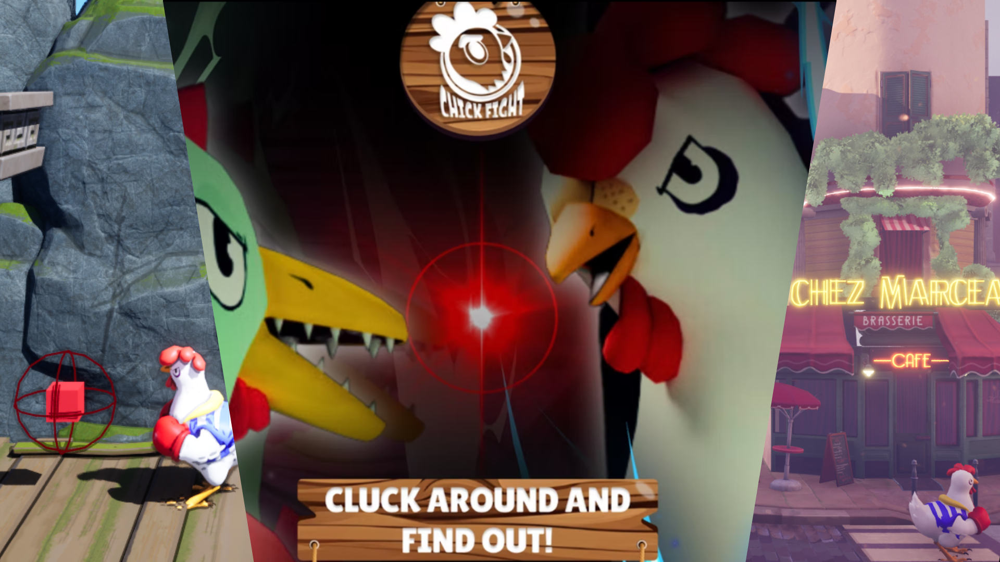Chickfight is a vibrant 2.5D brawler where players control two fierce chickens battling it out in a dynamic, action-packed arena. As the lead programmer, I utilized my extensive knowledge of Unreal Engine to bring this exciting and unique concept to life, ensuring smooth gameplay mechanics, responsive controls, and engaging AI behavior.
The gameplay focuses on strategic combat, featuring chickens with distinct combat abilities, ranging from basic attacks to special combos and powerful finishing moves. These moves are dynamically executed, thanks to Unreal Engine’s Blueprint system, which allows for rapid iteration and seamless integration of new combat mechanics. The arena design is both whimsical and tactical, creating opportunities for creative maneuvers and exciting player interactions.
In this project, I leveraged Unreal Engine's physics and collision detection systems to ensure precise and satisfying combat mechanics. The AI system in the Single player experience, built using both Unreal’s Behavior Trees and custom scripting, provides a challenging yet accessible opponent, enhancing the gameplay experience for both casual and competitive players. Additionally, I used Unreal’s animation tools to create smooth character animations, enhancing the visual impact of each action in combat.
By combining Unreal Engine’s robust features with innovative gameplay design, Chickfight delivers a fast-paced and engaging brawler that appeals to players looking for both humor and tactical depth in their gaming experience. My programming expertise in Unreal Engine was essential in crafting an optimized and enjoyable experience, making Chickfight a standout project in my portfolio.
Photo Gallery:
 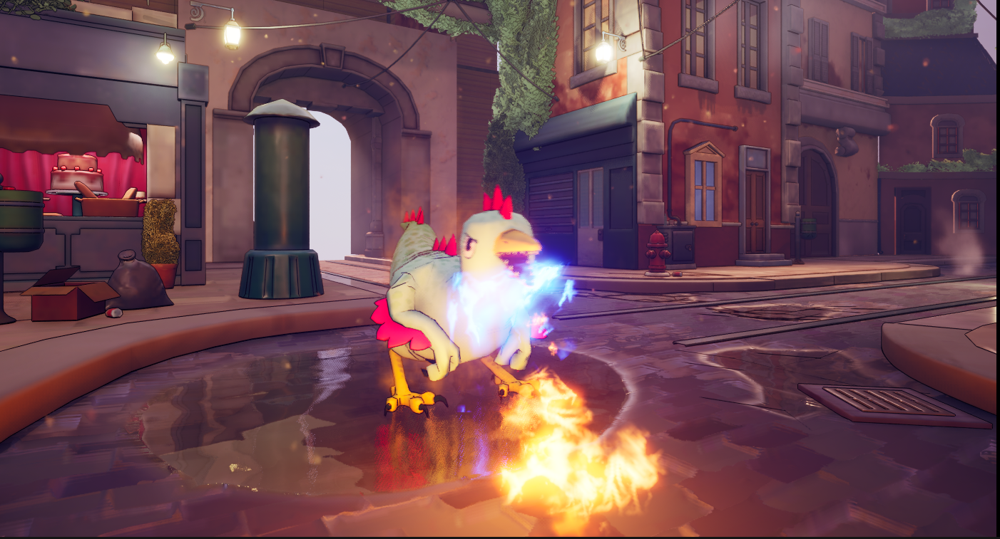
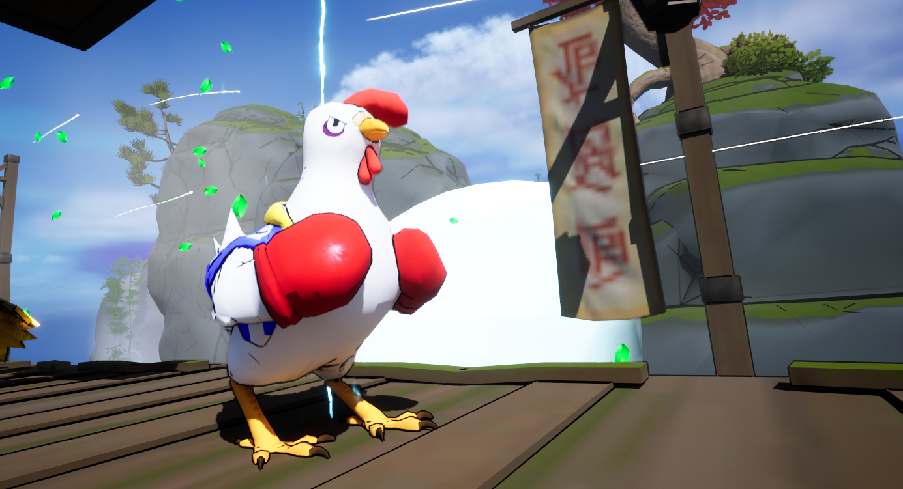
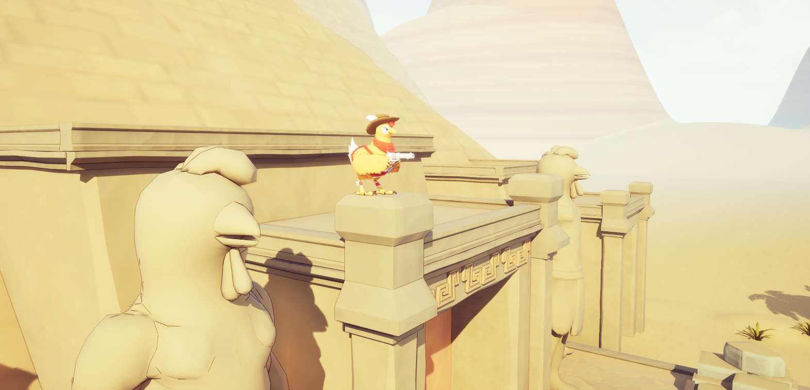
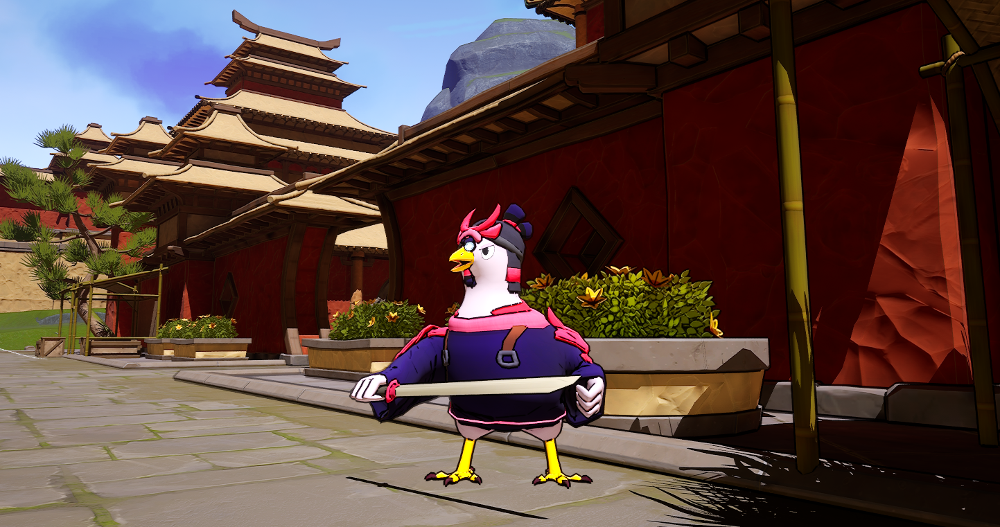
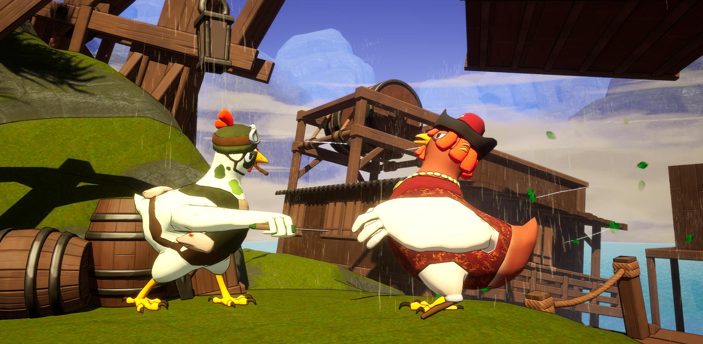
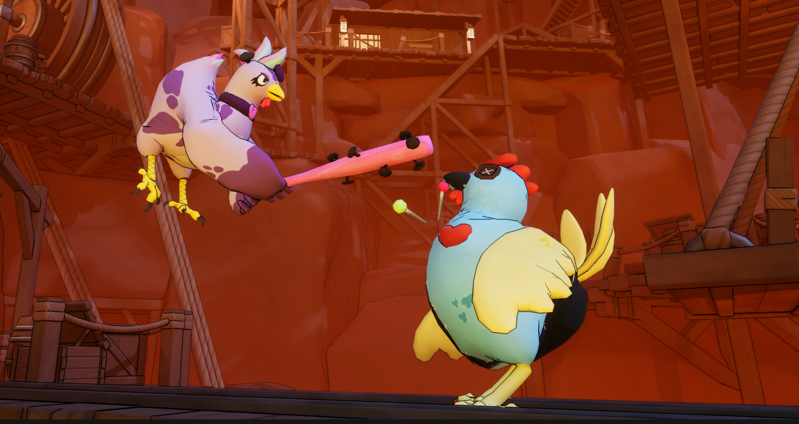
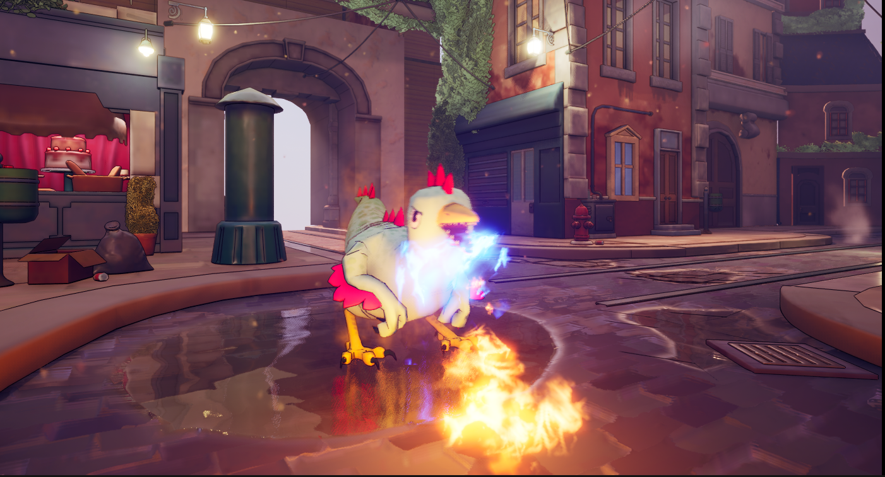
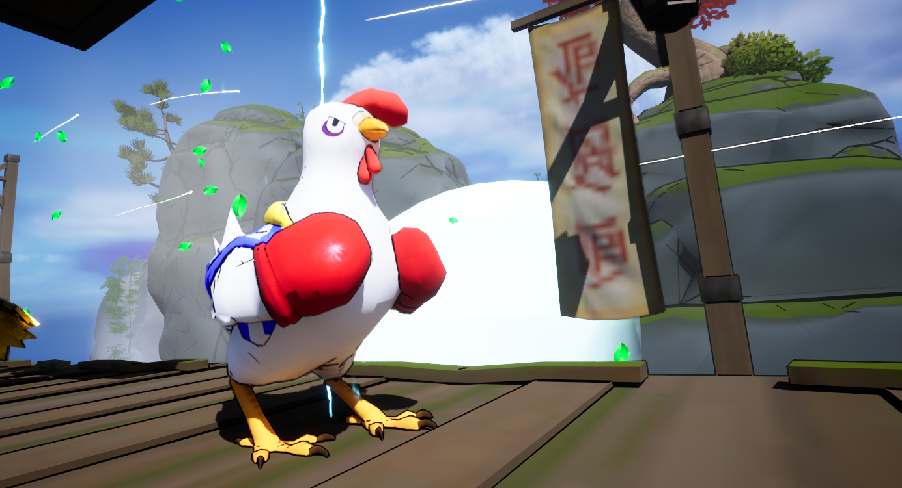
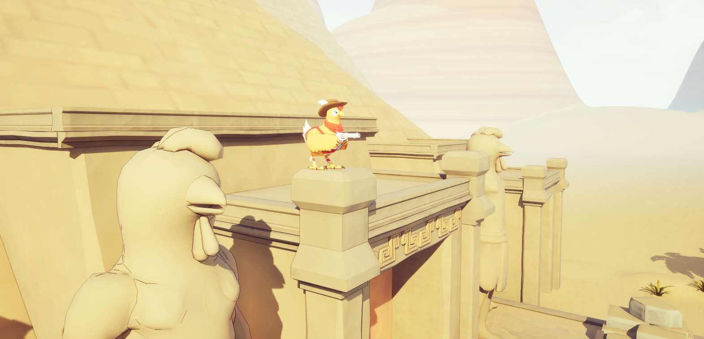
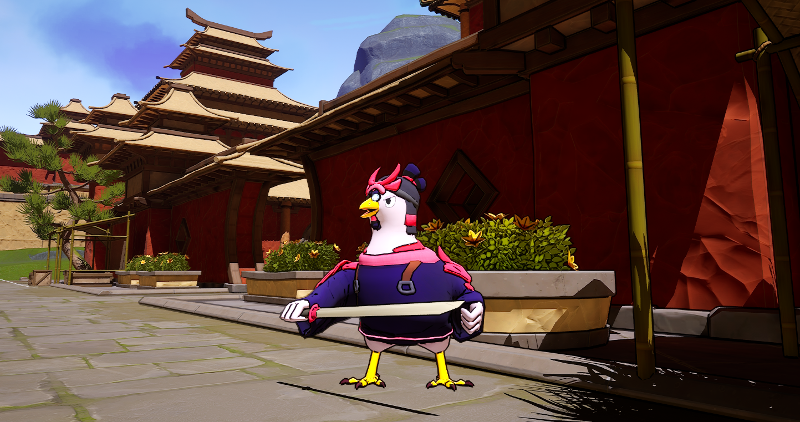
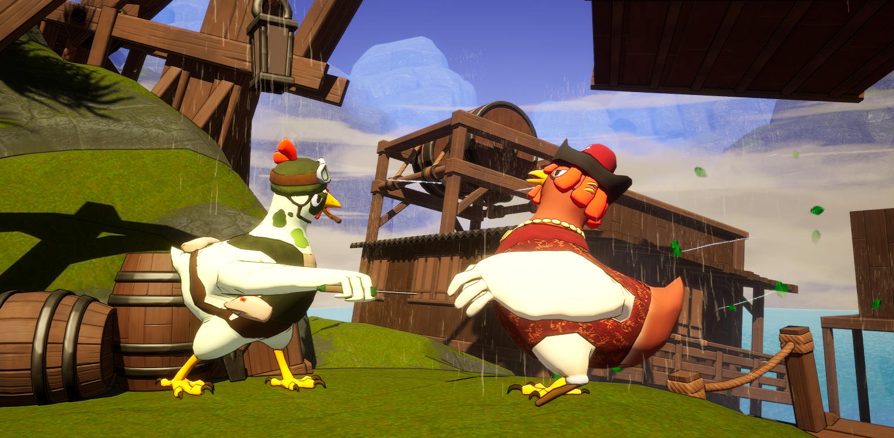
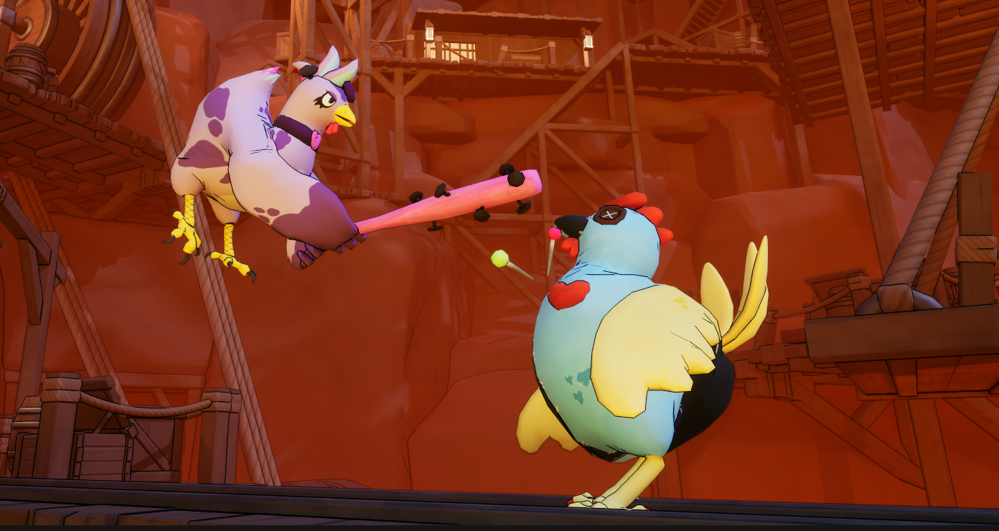
Too Close For Comfort: 3D Artist, 2D Artist, UI/UX Designer, Lead Programmer, Sound Designer (Global Game Jam 2025)
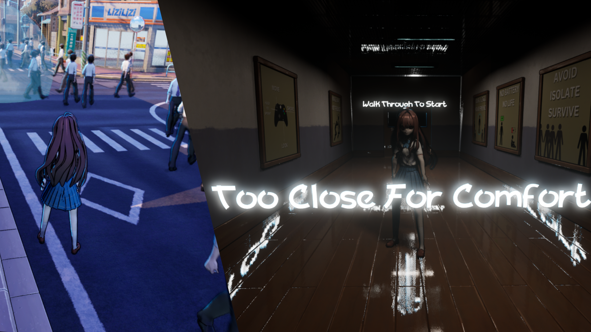Too Close For Comfort is a unique and innovative game created for the 2025 Global Game Jam, where players must navigate their way to school while avoiding allowing others into their "Social Bubble". As the 3D Artist, 2D Artist, UI/UX Designer, and Lead Programmer, I was responsible for bringing all elements of the game to life, from visual assets to gameplay mechanics, using Unreal Engine, alongside my partner Joshua Hardwick(who's website can be found here: Joshua Hardwick's Portfolio)
In this game, the central mechanic revolves around the protagonist’s social battery, which depletes when they are in close proximity to others. The challenge lies in maintaining a healthy social distance while still reaching necessary destinations, such as getting to class, despite the crowded environment. I used Unreal Engine’s Blueprint system to design the social bubble mechanic, allowing players to control their movement while managing their social battery. I had also used Unreal's animation system to create my own "Push" animation on the main character, allowing the player to push the AI characters out of the way.
As the 3D and 2D Artist, I created assets that reflected the game’s quirky and lighthearted theme, designing both the character models and environmental elements in 3D. I also contributed 2D artwork for in-game UI elements and visual feedback that enhanced the player’s experience. As the UI/UX designer, I focused on creating intuitive interfaces, ensuring that the player could easily track their social battery and navigate through crowded environments. The goal was to make the game’s core mechanics accessible while keeping the visual design clean and engaging.
Throughout the development, I also helped Josh work on the game’s crowd AI and pathfinding using Unreal Engine, ensuring that NPCs would crowd the map realistically, adding to the tension and strategic elements of the game as it forces the player to make careful decisions on how they navigate the map. The combination of player interaction, AI behavior, and visual design creates a dynamic experience that challenges players to maintain their social distance while making their way to class
I had also set up an audio system that played whisper noises at the AI's specific 3d positions, as long as the player was within a certain distance. The character and AI noises made were recorded by myself, while JOsh help implemented the sounds and level music
Too Close For Comfort provides a fresh take on social anxiety and personal space in a fun, engaging way, and through my role as lead programmer and designer, I was able to integrate both technical and artistic elements to deliver a cohesive, polished game experience.
you can find a downloadable link here!: Itch.IO link
Toronto Slang Generator: Creator
Toronto Slang Generator is a fun, random text generator inspired by Toronto slang, which I created during the COVID-19 pandemic. It's a simple website that generates Toronto slang, and can output the text to speech. I built this with the typical HTML, css and Javascript. The generator was inspired by linguist Noam Chomsky's ideas to make the generated sentences more coherent. The site went somewhat viral, catching the attention of local media. It was featured on the radio, I participated in a podcast interview, and it was even mentioned in a BlogTO article!
Check out the Toronto Slang Generator and have fun creating your own Toronto-inspired sentences, or play with it down below!